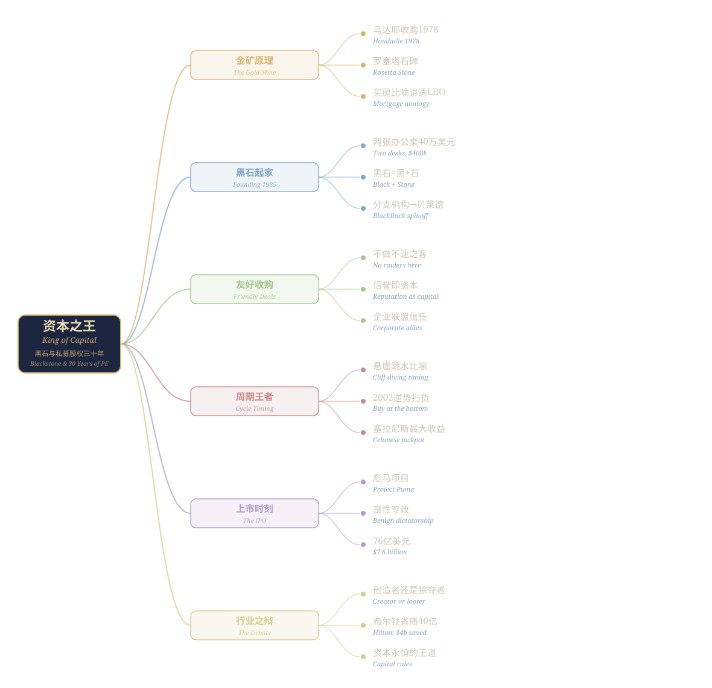

资本之王
〇 · 书籍信息
基本信息
| 书名 | 《资本之王：全球私募之王黑石集团成长史》——原著 King of Capital：黑石（Blackstone）与私募股权行业的崛起、坠落与再起 |
|---|---|
| 作者 | 两位长期报道并购行业的财经记者——以外部观察者身份写内部史：人物驱动、交易驱动、数字钉满全书 |
| 结构 | 26 章编年体：第 2 章「这会是一个金矿」（杠杆收购原理）→ 第 4 章「黑石的诞生」→ 第 17 章「塞拉尼斯，最成功的投资」→ 第 22 章「黑石上市了」→ 第 26 章「资本，永恒的王道」 |
| 体裁 | 金融纪实/行业史：读懂黑石，就读懂了私募股权这门生意的全部语法——募资、收购、改造、退出 |
| 一句话 | 黑石的全部秘密只有一条：不与趋势作对——别人做敌意收购时它做友好收购，别人追泡沫时它抄周期底部，别人狂奔到顶点时它上市套现。 |
一 · 核心主题总览
一部私募行业史里藏着四组母题：① 金矿的原理
1978 年 KKR 以 3.8 亿美元收购抽水机制造商乌达耶，施瓦茨曼研究募资说明书后自语：「这可是个金矿，就像指向杠杆收购的罗塞塔石碑。」杠杆收购的账很透明：10 万美元全款买房再 12 万卖出利润率 20%；首付 2 万、其余贷款，利润率就是 100%——收益放大来自负债，负债由目标公司自己偿还。
② 友好收购的逆流
在德崇证券与敌意收购横行的 1980 年代，黑石从第一天起亮明立场：「我们就是想让企业联盟信任我们。」信誉被当成资本使用：不与掠夺者为伍，换来的是企业客户把生意送上门——这是黑石与 KKR 路线之争的起点。
③ 周期是最大的杠杆
2002 年施瓦茨曼与詹姆斯在晚餐桌上达成共识：十年一遇的抄底窗口开了。收购周期性公司「就像悬崖跳水，过早或过晚跳入水中都将是致命的」——2003 年黑石以 165 亿美元交易额远远甩开对手，塞拉尼斯一案半年净收 30 亿美元现金。
④ 从交易到资本
1.5% 管理费 + 20% 超额收益分红 + 「天底下恐怕再也没有这种一本万利的事情了」——黑石完成了从「赚交易的钱」到「赚资本的钱」的升维：基金规模本身就是生意，IPO 76 亿美元是这套逻辑的加冕礼。
二 · 第一段 金矿 · 起家—— 罗塞塔石碑 · 两张办公桌 ——
罗塞塔石碑
1978 年，名不见经传的 KKR 以 3.8 亿美元收购上市公司乌达耶——收购者只动用一小部分自有资产，且不需个人担保。31 岁的雷曼银行家施瓦茨曼把募资说明书研究了又研究，多年后回忆：「我看了说明书，也研究了他们的资产结构，觉得那些收益可以实现，我告诉自己『这可是个金矿』，就像指向杠杆收购的罗塞塔石碑。」书的解释同样朴素：杠杆收购的原理并不是晦涩难懂的金融学术，也不是什么骗人把戏，任何通过抵押买卖过房子的人都可以理解它的运作。
◆ 语言学习 · 概念 · 杠杆收购
| 杠杆收购（LBO） | 以目标公司的资产与现金流为抵押融资收购——融资主体是目标企业而非收购方 |
|---|---|
| 乌达耶收购 | 1978 年 KKR 收购抽水机制造商：行业史的分水岭事件 |
| 罗塞塔石碑 | 施瓦茨曼对那份募资说明书的称呼：解读 LBO 财富密码的钥匙 |
| 利息抵扣 | 巨额债务的利息从利润中扣除——负债累累的公司几乎不缴企业所得税 |
句型 ｜ 「假设你用 10 万美元现金买一套房，12 万卖出利润率 20%；若只首付 2 万、其余贷款，偿还贷款后利润率则是 100%。」——买房比喻句是全书的教学枢纽：金融魔术在展开后只剩小学算术。
40 万美元与两张办公桌
黑石之名是两人渊源的合体：「在德语和依地语中，施瓦茨（schwarz）是『黑』的意思，而在希腊语中，彼得（peter）意为『石头』」。59 岁的彼得森凭人脉招生意，38 岁的施瓦茨曼负责执行，每天早晨 8:30 在梅菲尔酒店咖啡厅共进早餐。他们的经营理念被施瓦茨曼一句话锁定：「我们并不想把太多资金投资于低收益资产，我们的经营理念是：每个雇员都能撬动高额资产，边际收益率要非常高。」「分支机构」的合资模式还送出了一份意外的历史遗产：约翰·施雷伯的房地产机构，与劳伦斯·芬克领导的债券投资机构——后者即黑岩公司（BlackRock，贝莱德），从黑石分拆后成长为全球最大的上市资管公司。
◆ 语言学习 · 概念 · 黑石的商业模式
| 分支机构模式 | 类合资架构：给予旗下业务大量股份以吸引人才，又不稀释母公司控制权 |
|---|---|
| 黑岩/贝莱德 | 劳伦斯·芬克创立的债券投资机构，从黑石分拆——两个「黑」字辈的意外兄弟 |
| 管理费 1.5% | 按基金总额每年计提——募资 10 亿即年入 1500 万，与业绩无关 |
| 20% 分红 | 超额收益的 carry 分成——私募行业的「二八定律」 |
习语 ｜ 「天底下恐怕再也没有这种一本万利的事情了。」——作者对管理费模式的惊叹：基金足够大，哪怕不为投资者赚一分钱，管理费已经够可观；「从那时开始，我们开始赚回花掉的资本，从而生存下来」——施贵宝一单 5 万美元生意救了公司。
三 · 第二段 拍档 · 逆流—— 最忠实的拍档 · 一个人的舞台 ——
我们是最忠实的拍档
黑石诞生于敌意收购的黄金年代，却选择站在对立面。施瓦茨曼给德崇证券的评价是：「德崇在商界和金融界都不受欢迎，他们就像是派对中轰也轰不走的不速之客。」黑石以信誉作保向企业联盟表态：不做掠夺者，免得将来自己成为目标公司时无人施援。这条「友好收购」路线在当年是逆流，在事后看是黑石最值钱的一笔品牌投资——雷曼的光环则让名不见经传的小公司在谈判桌上获得了远超体量的信用。
◆ 语言学习 · 概念 · 信誉资本
| 德崇证券 | 垃圾债与敌意收购时代的军火商——黑石公开与之划清界限 |
|---|---|
| 敌意收购 | 绕开管理层直接向股东发要约——1980 年代的行业主流打法 |
| 信誉资本 | 以「不做什么」积累的信任资产：黑石的品牌地基 |
| 企业联盟 | 大企业客户网络——友好收购路线的回报来源 |
句型 ｜ 「要不然，当我们自食其果、成为他们的目标公司时，再去寻求同行的帮助就晚了。」——反向推演句式：立场不是道德宣言，是风险管理——黑石的善意从来都带着精算。
噩梦、对手与分道扬镳
成长并非线性：第 8 章「并购噩梦」记录了交易的翻车时刻，第 9 章「对手不止一个」揭示同行竞争与内部张力的双重挤压，第 10 章则是全书情感的暗线——「和彼得森分道扬镳」：两位创始人渐行渐远，彼得森逐步淡出转向公共政策，施瓦茨曼走上「一个人的舞台」。此后的黑石进入单核时代：第 11 章押注「房地产，黑石的新宠」，第 13 章在科技泡沫时代完成 150 亿美元的巨大收获——每次都踩在别人恐慌的时点上。
◆ 语言学习 · 概念 · 组织演变
| 双核→单核 | 彼得森淡出后施瓦茨曼独掌大局——决策速度换来了权力集中 |
|---|---|
| 一个人的舞台 | 第 7 章标题：施瓦茨曼成为黑石无可争议的中心 |
| 房地产新宠 | 黑石的第二增长曲线：从并购咨询延伸出的不动产版图 |
| 150亿美元 | 科技泡沫时代的收获——逆周期布局的又一次胜利 |
习语 ｜ 「每一单交易都是或生或死的抉择。」——第 6 章标题即行业生态：私募行业没有浑水摸鱼的年度，只有赢家和出局者。
四 · 第三段 周期 · 王者—— 悬崖跳水 · 塞拉尼斯魔术 ——
悬崖跳水
2002 年，多数并购公司还在为 90 年代末的错投疗伤，施瓦茨曼与詹姆斯却在晚餐桌上达成共识：这是十年一遇的低价收购窗口。汉密尔顿巷公司的顾问回忆施瓦茨曼当时的话：「看看将要发生什么吧！你应该开始收购了。」书里给出的比喻成为行业教科书：收购周期性公司「就像在墨西哥阿卡普尔科玩悬崖跳水，过早或过晚跳入水中都将是致命的」——跳对时点，收益与估值双升，利润成倍放大。2003 年经济回稳，黑石以 165 亿美元交易额远远领先，最接近的高盛只有其一半量级。
◆ 语言学习 · 概念 · 周期投资
| 周期性行业 | 命运随经济波动剧烈起伏的行业——化工、汽车、半导体皆属此类 |
|---|---|
| 悬崖跳水 | 周期投资的比喻：起跳时点决定生死 |
| 估值倍数 | 好年景现金流 7 倍、坏年景 6 倍——收益与倍数双杀是 LBO 的固有风险 |
| 逆势收购 | 别人疗伤时扫货——黑石 2002–2003 年的核心动作 |
句型 ｜ 「我们很主动，很有自信，出手买入了大量工业资产。」——詹姆斯的短句自述：行业自信的最高形式，是在别人最没有自信的时候花钱。
塞拉尼斯魔术
操盘手朱钦的来路就是一部逆袭史：越南撤离时逃出的难民家庭、布法罗大学本科、靠敢于质疑上司立足——他当年直言海恩斯项目不赚钱，被上司斯托克曼数周不理睬，结果 5400 万美元投资损失 4300 万，朱钦的判断完胜。2001 年他盯上法兰克福上市公司塞拉尼斯：过半业务与利润在美国、在德国市场「名义上的德国公司」估值偏低——「我们相信塞拉尼斯公司在降低成本方面有很大改进空间，因为塞拉尼斯是多次并购的产物」。德国职工代表占据董事会近半席位、普遍不信任私募基金，谈判历时数年、借助与通用电气联合才破门——最终成为黑石成立以来最大收益：非凡的金融手段与大量运营细节改进的完美结合。
◆ 语言学习 · 概念 · 价值创造
| 孤儿公司 | 母公司合并后被迫 IPO 的业务：一半资产在另一个国家，估值无人疼爱 |
|---|---|
| 职工共决制 | 德国法律要求大企业董事会近半席位给职工代表——私募的天敌 |
| 金融工程+运营改进 | 塞拉尼斯案例的公式：低买 + 降本 + 择时退出 |
| 纳尔科 | 朱钦同期的水处理化学品收购案——同样数倍利润，成就其新星地位 |
句型 ｜ 「朱钦敢于质疑他上司的观点。」——一句话的人物质检：黑石的投资委员会制度里，说真话的下属比听话的下属值钱。
五 · 第四段 上市 · 反思—— 彪马项目 · 创造者还是掠夺者 ——
彪马项目
2006 年 KKR 在阿姆斯特丹募集 50 亿美元后，施瓦茨曼对首席财务官保证：「我不会输第二次了。」代号「彪马项目」的 IPO 以史无前例的保密级别推进：所有外聘律师、会计师、银行家签订私人保密协定，连彼得森本人都在几个月后才知情。施瓦茨曼开出两个条件：控制权仍归管理层——「良性的专政制度」不能因上市被破坏；IPO 是为了留住员工，而不是让他们花光钱走人。花旗银行家克莱因给黑石估值不低于 200 亿美元——依据正是「2+20」的机器属性：1.5% 管理费加 20% 分红，投资者一锁定就是十年，「这就决定了私募公司比对冲基金更具投资价值」。
◆ 语言学习 · 概念 · 上市抉择
| 彪马项目 | 黑石 IPO 的内部代号——对标 KKR「猎豹项目」的极密工程 |
|---|---|
| 良性专政 | 施瓦茨曼对自己决策体制的自称：集权是效率的来源，也是争议的来源 |
| 股权货币化 | IPO 让合伙人股权变成现金——创始团队财富的兑现仪式 |
| 2+20 机器 | 管理费+分红的双引擎：基金规模越大，机器转速越快 |
习语 ｜ 「是史蒂夫与亨利的心理动力推动着整个行业的发展。」——圈内人半开玩笑的评语：施瓦茨曼与 KKR 克拉维斯的世纪对决，是行业机器最强劲的隐性燃料。
是创造者，还是掠夺者
金融危机把行业声誉的老账全部翻出：《门口的野蛮人》与电影《华尔街》里「无情的职业操刀手」形象从未洗刷，《商业周刊》重提「购买它，剥离它，恣意处理它」。作者的核查给出了三层答案：「第一个问题的答案很明显是否定的——作为一个行业，私募股权并不损害经济」；部分收益确实来自择时与杠杆，「但是这并没有罪」。危机后的成绩单同样硬核：格雷主导的希尔顿债务重组一举省去 40 亿美元（总债务 200 亿），黑石最终获得约 60% 回报；第七只收购基金募集 160 亿美元——但施瓦茨曼们也承认「这已经不是老式的杠杆收购了」：钱开始流向电力线、页岩气、风能。
◆ 语言学习 · 概念 · 行业辩护
| 门口的野蛮人 | 雷诺兹-纳贝斯克收购案的纪实书名——行业负面形象的固定出处 |
|---|---|
| 债务重组 | 危机中与债权人重签协议：希尔顿一笔省去 40 亿美元债务 |
| 王者归来 | 后危机时代 160 亿美元新基金——市场信号意义大于金额 |
| 长期资本配置 | 从买公司转向投基建、能源——私募行业的第二次进化 |
习语 ｜ 「购买它，剥离它，恣意处理它。」——《商业周刊》对行业的指控句，与作者的反驳「这并没有罪」构成全书结尾的辩论题：掠夺与创造的判据，不在动机在结果。
六 · 人物图鉴与成长弧线—— 主角配角 · 一张表看穿 ——
主要人物
史蒂夫·施瓦茨曼——黑石联合创始人、CEO。从雷曼 31 岁合伙人到全球私募之王：「这可是个金矿」的发现者、「良性专政」的设计者、76 亿美元 IPO 的操盘者——全书的主角，也是争议的中心
彼得·彼得森——黑石联合创始人、前雷曼 CEO、前美国商务部长：凭上流社会人脉为黑石开路，后期与施瓦茨曼分道扬镳——「两张办公桌」时代的另一半，以及双核变单核的代价见证者
汉密尔顿·詹姆斯——黑石二号人物、周期抄底的共谋者：「我们很主动，很有自信，出手买入了大量工业资产」——2002 年餐桌共识的另一半，IPO 谈判的执行者
朱钦——难民出身的合伙人：布法罗大学本科、敢当众否定上司，塞拉尼斯与纳尔科两案奠定新星地位——黑石「说真话文化」的人格化样本
次要人物（功能位）
| 亨利·克拉维斯 | KKR 掌门人、施瓦茨曼的宿敌：80 年代早已功成名就——「是史蒂夫与亨利的心理动力推动着整个行业的发展」 |
|---|---|
| 劳伦斯·芬克 | 从黑石分拆的黑岩（贝莱德）创始人——「分支机构」模式结出的最大意外果实：兄弟公司成了全球最大资管 |
| 乔纳森·格雷 | 房地产小组领军者：希尔顿债务重组一举省债 40 亿美元——危机中替公司翻盘的年轻一代 |
| 德崇证券 | 垃圾债时代的军火商与行业公敌——黑石以公开与之划清界限完成第一次品牌定位 |
七 · 主题与象征—— 每个道具都在说话 ——
| 黑石之名 ↔ 渊源合体 | schwarz（德语·黑）+ peter（希腊语·石）——公司名是一份藏头合伙协议 |
|---|---|
| 金矿 ↔ LBO 原理 | 募资说明书被施瓦茨曼称为罗塞塔石碑——财富密码的形态是一份文件 |
| 悬崖跳水 ↔ 周期时机 | 阿卡普尔科的比喻——周期投资的全部技术浓缩为一跳 |
| 两张办公桌 ↔ 起点 | 285 平米、40 万美元、一位秘书——所有帝国史都需要一个寒酸的开局镜头 |
| 秃鹰 ↔ 危机抄底 | 第 15 章「做一只精明的秃鹰」——行业的残酷分工：别人倒下时它进食 |
八 · 写作手法赏析—— 怎么写，就能怎么学 ——
① 编年史体
26 章按时间推进，每章一个主题事件——公司史写出了章回体的节奏
② 人名驱动
交易背后全是具体的人与性格——金融史被写成群像剧，可读性来自人物弧线
③ 数字钉子
40 万启动资金、165 亿交易额、76 亿 IPO、40 亿省债——每章至少一枚数字钉子，行业规模感由数字垒成
④ 立场的诚实
不回避争议（第 25 章专章讨论「创造者还是掠夺者」）——作者的核查与行业的辩护并列呈现，把判断权交还读者
九 · 名段欣赏—— 原文精读 · 逐段赏析 ——
十 · 金句摘录—— 14 条 · 中英对照 · 带出处 ——
"我看了说明书，也研究了他们的资产结构，觉得那些收益可以实现，我告诉自己『这可是个金矿』。"—— 第2章 · 施瓦茨曼
"杠杆收购的原理并不是晦涩难懂的金融学术，也不是什么骗人把戏，任何通过抵押买卖过房子的人都可以理解它的运作。"—— 第2章
"在德语和依地语中，施瓦茨（schwarz）是『黑』的意思，而在希腊语中，彼得（peter）意为『石头』。"—— 第4章 · 公司名由来
"我们的经营理念是：每个雇员都能撬动高额资产，边际收益率要非常高。"—— 第4章 · 施瓦茨曼
"德崇在商界和金融界都不受欢迎，他们就像是派对中轰也轰不走的不速之客。"—— 第4章
"天底下恐怕再也没有这种一本万利的事情了。"—— 第4章 · 论管理费模式
"每一单交易都是或生或死的抉择。"—— 第6章 标题
"看看将要发生什么吧！你应该开始收购了。"—— 第17章 · 施瓦茨曼 2002
"就像在墨西哥阿卡普尔科玩悬崖跳水，过早或过晚跳入水中都将是致命的。"—— 第17章
"我们相信塞拉尼斯公司在降低成本方面有很大改进空间，因为塞拉尼斯是多次并购的产物。"—— 第17章 · 朱钦
"我不会输第二次了。"—— 第22章 · 施瓦茨曼
"这就决定了私募公司比对冲基金更具投资价值。"—— 第22章 · 克莱因
"第一个问题的答案很明显是否定的。作为一个行业，私募股权并不损害经济。"—— 第25章
"这已经不是老式的杠杆收购了。"—— 第26章
十一 · 拓展阅读—— 原文 · 词条 · 译文 ——
十二 · 个人感悟与心得—— 三点心得 ——
三点感悟
① 不与趋势作对
从友好收购、逆周期抄底到高点上市，黑石的每次关键跳跃都顺应了某个更大的潮流。「不与趋势作对」不是保守，是把行业情绪当反向指标——别人狂热时站队冷静，别人恐慌时出手。
② 周期是最大的杠杆
悬崖跳水的比喻值得贴在任何投资决策前：标的、价格、杠杆都只是入场券，时机才是主裁判。塞拉尼斯的四年谈判与 2002 年的餐桌共识共同说明：大机会从来不是发现出来的，是等出来又果断跳下去的。
③ 从交易到资本
黑石的终极升维不是买得更好，而是把「管理别人的钱」本身做成了资产：1.5% + 20% 的机器一旦转起来，规模就是护城河。这一课超越私募行业——任何生意的终局问题都是：你的收入模式是人力型的，还是资本型的。
合上书最难忘的是开篇那个画面：两张办公桌，40 万美元，一份被读懂的说明书——资本之王的全部历史，都藏在这三个词的因果链里。
十三 · 一页速查（复习用）
| LBO 原理 | 用目标公司自己的资产与现金流融资收购——买房比喻即可讲清 |
|---|---|
| 友好收购 | 不与德崇/敌意收购者为伍——信誉是黑石第一笔也是最值钱的投资 |
| 周期投资 | 悬崖跳水：2002 年逆势扫货，塞拉尼斯成为史上最大收益 |
| 2+20 机器 | 1.5% 管理费 + 20% 分红 + 十年锁定期——从赚交易的钱到赚资本的钱 |
| 上市与反思 | 76 亿美元 IPO；「创造者还是掠夺者」的行业之辩，答案在结果不在动机 |
十四 · 全书思维导图—— 一图纵览 ——

一图纵览全书骨架 · 中英双语对照 · 手机端可左右滑动查看全图